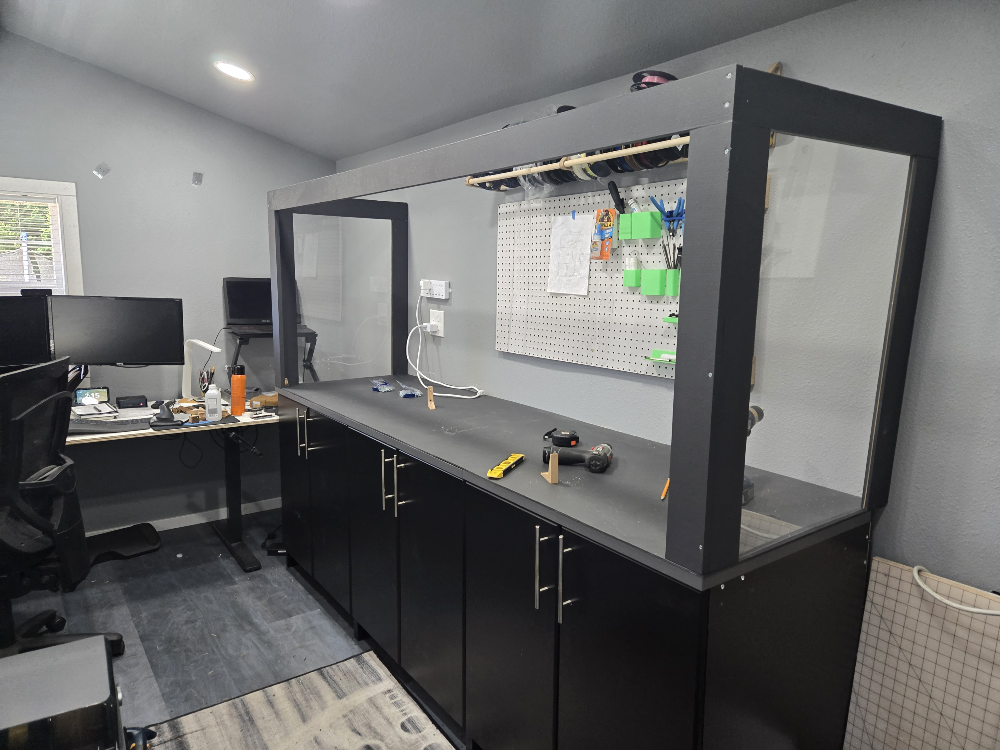
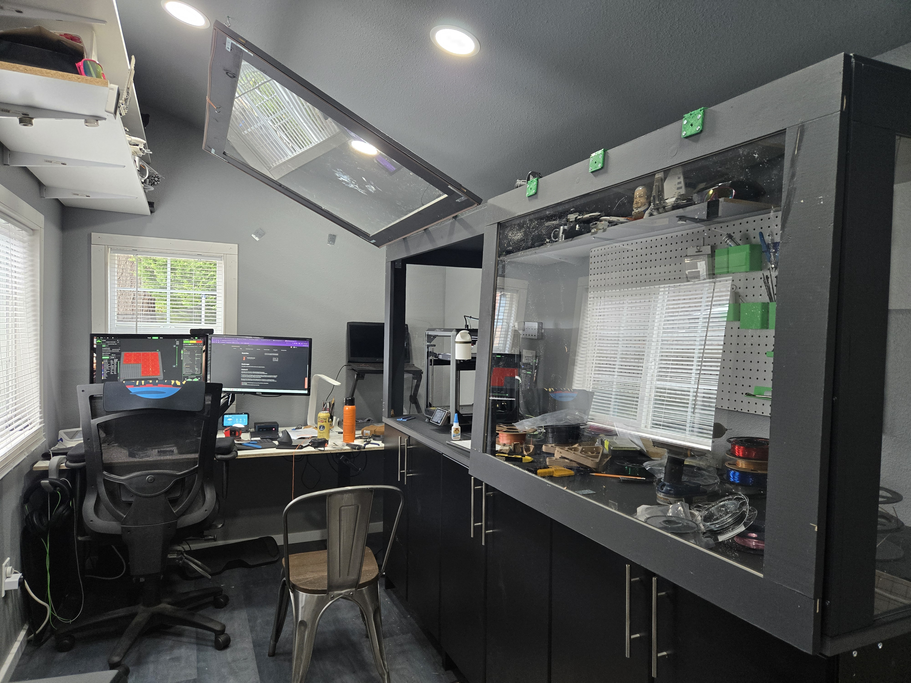
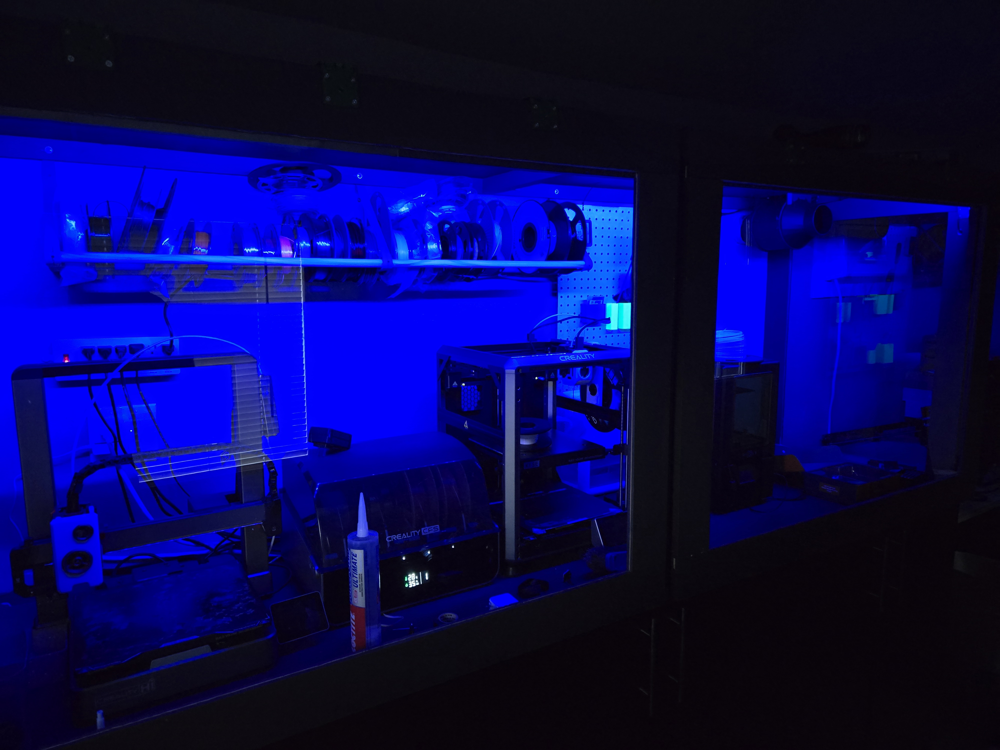
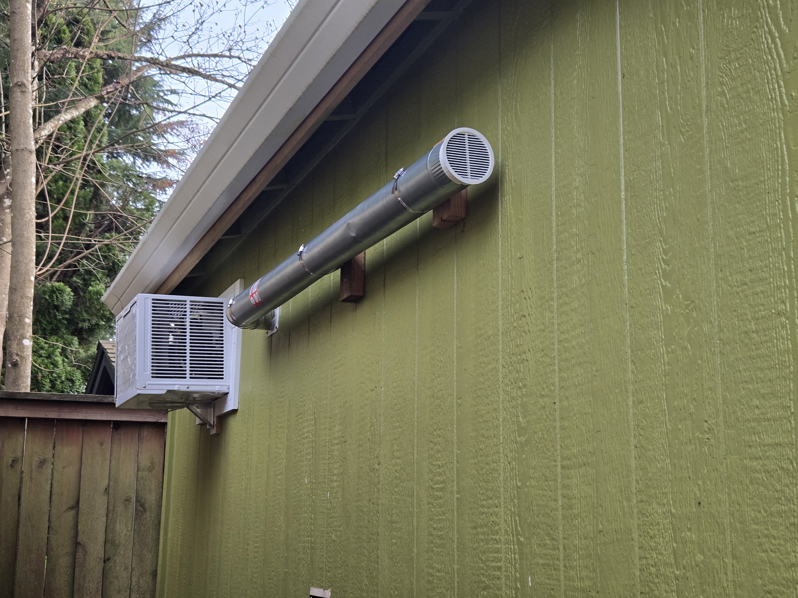

Personal Project
The primary need was simple: my 3D printing hobby had outgrown the house. With multiple printers, filament storage, post-processing equipment, and the general chaos that comes with running prints, there was no good place inside the home to do it properly. Add three kids, a house that was already bursting at the seams, and a fully remote job that needed a dedicated workspace, and the case for a separate structure became obvious. The hobby needed a real home — and so did the workday.
The answer was a dedicated backyard shed — purpose-built to serve as both a 3D printing workshop and a home office. The shed was designed to house multiple printers with enough workspace to process prints and work on equipment. A ventilated enclosure was built inside specifically for printing with materials that produce toxic fumes, allowing for a wider range of materials without compromising safety. The space does double duty: when the workday starts, it's an office; when the laptop closes, it's a workshop.
What the shed gave me wasn't just square footage — it was focus. Working from home with a family means the boundary between work and life can dissolve completely if you let it. The shed made the boundary physical. I added a simple indicator system to let my family know when I was working or in a meeting, which meant fewer interruptions and more genuine presence — both in meetings with my teams, and with my family when the workday was done. It turns out that a structure in the backyard did more for work-life balance than any productivity system I'd ever tried.



